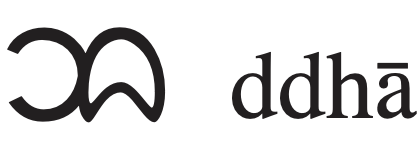
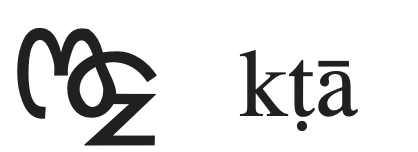
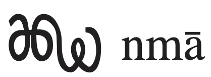

This page brings together basic information about the Chakma script and its use for the Chakma language. It aims to provide a brief, descriptive summary of the modern, printed orthography and typographic features, and to advise how to write Chakma using Unicode.
The information on this page is derived from the sources listed. Those sources are sometimes inconsistent or lacking in certain information. In addition, almost no IPA transcriptions were found for the few items in the term database. The information provided here should be reliable, but additional research is needed in some areas, many of which are noted in observations in the text.
Chakma is spoken by about 300,000 people in southeast Bangladesh and neighbouring parts of India.u The number of people who write their language in the Chakma script is small, however, as the majority use the Bengali script, instead.ws The language and script have been introduced to non-governmental schools in Bangladesh and Mizoram.@Chakma script,https://www.youtube.com/watch?v=W4I4N0B7_8A
𑄌𑄋𑄴𑄟𑄳𑄦 𑄃𑄧𑄏𑄛𑄖𑄴
The Chakma script is an early offshoot from the Mon-Burmese script, and retains many of it's forms and features. It is currently in danger of being replaced by the Bengali script, due to cultural and political developments over the past century.
The Chakma script is an abugida, ie. each consonant contains an inherent vowel sound. See the table to the right for a brief overview of features for the modern Chakma orthography.
Chakma text runs left-to-right in horizontal lines. There is no case distinction. Words are separated by spaces.
Chakma represents native consonant sounds using 32 basic letters and a couple more for specialised orthographies.
Syllable-final consonants are typically written using 11134 to kill the vowel of a syllable-final consonant letter, but the diacritics 𑄁 and 𑄂 may be used for -ŋ and -h, respectively.
The absence of an inherent vowel is usually indicated in modern text by the explicit diacritic 11134 (maayyaa). However, 5 consonants (and occasionally more) may be subjoined to indicate a consonant cluster. A more old-fashioned alternative is to create ligatures rather than stacks.
11134 is also used to indicate geminated consonants, in which case the base consonant typically supports this diacritic plus a vowel sign.
The following represents the repertoire of the Chakma language.
Click on the sounds to reveal locations in this document where they are mentioned.
Phones in a lighter colour are non-native or allophones. Source Wikipedia.
Vowel sounds
Plain vowels
Consonant sounds
labial
labio- dental
alveolar
post-
alveolar
retroflex
palatal
velar
glottal
stop
pb
td
ʈɖ
kɡ
pʰbʰ
tʰdʰ
ʈʰɖʰ
kʰɡʰ
affricate
t͡ʃd͡ʒ
t͡ʃʰd͡ʒʰ
fricative
v
sz
ʃ
h
nasal
m
ɱ
n
ɳ
ɲ
ŋ
approximant
w
l
j
trill/flap
r
ɽ
Tone
Chakma is not a tonal language.
Structure
tbd
Vowels
Vowel summary table
The following table summarises the main vowel to character assigments.
ⓘ represents the inherent vowel. Diacritics are added to the vowels to indicate nasalisation (not shown here). The right-hand column lists independent vowels.
The following is the set of characters needed to write vowels, as described in this section, grouped by general category.
𑄃␣𑄄␣𑄅␣𑄆𑄀␣𑄧␣𑄨␣𑄩␣𑄪␣𑄫␣𑄬␣𑄭␣𑄮␣𑄯␣𑄰␣𑄱␣𑄲␣𑄴␣𑅅␣𑅆
Inherent vowel
𑄇
kaU+11107 LETTER KAA
The inherent vowel for Chakma is aː (longer than the inherent vowels in Bangla and Hindi). So kaː is written by simply using the consonant letter.
Post-consonant vowels
𑄇𑄨
kiU+11107 LETTER KAA + U+11128 VOWEL SIGN I
Plain post-consonant vowel sounds are written using 7 combining marks and 3 more are used for diphthongs. Chakma has 1 pre-base vowel sign and 2 circumgraphs.
Two of the vowel signs are spacing marks, meaning that they consume horizontal space when added to a base consonant.
All vowel signs are typed and stored after the base consonant, and the glyph rendering system takes care of the positioning at display time. When consonants are stacked the glyphs used to represent vowels, whether alone or in multipart vowels, are arranged around a syllable onset, which may be 2 consonants, rather than just around the immediately preceding consonant. See prebase and circumgraphs.
Plain vowels
Chakma uses the following dedicated combining marks for basic vowels. They are all vowel signs.
𑄨␣𑄩␣𑄪␣𑄫␣𑄬␣𑄮␣𑄧
One additional vowel-sign, 𑅅, is used to indicate an explicit aː sound in the Baarah Maatraa orthography.
Diphthongs
Single-character vowel signs are used to write the following diphthongs.
𑄰␣𑄭␣𑄯
Again, the Baarah Maatraa orthography makes use of an additional vowel sign, 𑅆, to write the sound eːi.
Other diphthongs appear to use multiple vowel signs over the same base consonant. These include:
𑄪𑄭
Pre-base vowel sign
𑄇𑄬
keU+11107 LETTER KAA + U+1112C VOWEL SIGN E
Chakma has one pre-base vowel sign.
𑄬
This combining mark is always typed and stored after the base consonant. The rendering process places the glyph before the base consonant at the time of display.
When a consonant cluster is indicated using the visible diacritic 𑄴, the vowel sign is written before the second consonant in the cluster.
𑄦𑄨𑄢𑄴𑄝𑄬
Observation: When an orthographic syllable begins with a consonant cluster that is rendered as a conjunct the vowel sign is presumably rendered before the start of the syllable, however i have not yet seen examples of such a sequence.
Circumgraphs
𑄇𑄮
koU+11107 LETTER KAA + U+1112E VOWEL SIGN O
Two vowel signs are usually produced by a single combining character with visually separate parts, that appear on different sides of the consonant onset.
𑄮␣𑄯
Like pre-base glyphs, these are combining marks that are always stored after the base consonant. When rendered, the single code point produces multiple glyphs, which are placed on different sides of the base consonant.
These circumgraphs have canonically equivalent decomposed forms (see encoding), but in normal text 𑄱 and 𑄲 are not usually found.
Vowel length
Dedicated vowel signs are available for long vowel sounds.
Nasalisation
𑄀
Nasalisation is indicated using 11100.
This can also be used in syllables that end with an anusvara or a visarga.mh,2 For example, 𑄃𑄂𑄀.
Since both diacritics have the same combining class, the order in typing and storage should reflect the increasing distance from the base character.
Multipart vowels
Multipart vowels are only produced when the 2 circumgraphs are decomposed to create the following pairs:
𑄮␣𑄯
Standalone vowels
At the beginning of a word standalone vowels can be written using either one of four independent vowels or using combinations of vowel signs with 𑄃.
The independent vowels are the following.
𑄄␣𑄅␣𑄆␣𑄃
Other standalone vowels are written using vowel signs attached to 𑄃, but there is also a modern trend to represent the sounds covered by the independent vowels using combinations, too. The following list shows just a few examples.
𑄃𑄨␣𑄃𑄩␣𑄃𑄪␣𑄃𑄫␣𑄃𑄬␣𑄃𑄰
Vowel absence
The dropping of the inherent vowel for syllable codas in Chakma is marked using 𑄴.
This section maps Chakma vowel sounds to common graphemes in the Chakma script orthography.
The left column shows dependent vowels, and the right column independent vowel letters.
Click on a grapheme to find other mentions on this page (links appear at the bottom of the page). Click on the character name to see examples and for detailed descriptions of the character(s) shown.
Plain vowels
Dependent vowels
Independent vowels
i
𑄨
𑄖𑄨𑄚𑄴
𑄄
iː
𑄩
u
𑄪
𑄞𑄪𑄖𑄴
𑄅
uː
𑄫
e
𑄬
𑄛𑄬𑄇𑄴
𑄆
o
𑄮
𑄍𑄮𑄣𑄉𑄧𑄢𑄴
ɔ
𑄧
𑄈𑄧𑄢𑄴𑄉𑄧𑄌𑄴
aː
Inherent vowel
𑄇𑄋𑄢
𑅅 Used by the Baarah Maatraa orthography.
𑄃
𑄃𑄘𑄢
Complex vowels
ai̯
𑄭
𑄇𑄟𑄇𑄴𑄭
ou̯
𑄯
𑄢𑄘 𑄇𑄪𑄢𑄯
oi̯
𑄰
eːi̯
𑅆 Used by the Baarah Maatraa orthography.
Consonants
Consonant summary table
The following table summarises the main consonant to character assigments.
Whereas the table just above takes you from sounds to letters, the following simply lists the basic consonant letters (however, since the orthography is highly phonetic there is little difference in ordering).
Ganguly et al. say that native speakers don't distinguish between s and ʃ, and that there is also much interchangeability between s and t͡ʃ. The following 2 examples with IPA transcriptions in Wikipedia appear to illustrate this, and an ambivalence between kʰ and h, but more research is needed to completely map out the correspondences between written letters and sounds, and for now we will stick with the correspondences conventionally ascribed in the resources seen.
𑄍𑄮𑄣𑄉𑄧𑄢𑄴
𑄈𑄧𑄢𑄴𑄉𑄧𑄌𑄴
Observation: It is worth noting, however, that recordings on YouTube by Bivuti Chakma pronounce 𑄇 and 𑄈 as haː. He also tends to pronounce 𑄌 and 𑄍 as saː. It isn't clear whether this is a dialect, or idiolect, or standard pronunciation.
Observation: Bivuti also appears to pronounce 𑄛 and 𑄜 as faː.
Observation: The sources used give no clear indication relating to the difference between 𑄡 and 𑄠, and the phonemic value of the former varies from source to source. Bivuti seems to pronounce the former as z. The second letter is commonly used as the second item in a consonant cluster involving both the virama and maayyaa, which Bivuti seems to pronounce as ɛ. It is assumed, given the Unicode names and the fact that most Chakma write using the Bengali script, that these are used in a similar though not identical way as
য U+09AF BENGALI LETTER YA
and
য় U+09DF BENGALI LETTER YYA,
but that needs to be corroborated. This is discussed further in questions.
Other consonants
The following consonants were introduced for use with specialised orthographies.
𑅇␣𑅄
𑅇 is used for the sound v when writing Pali.
𑅄 is used for the aspirated sound lʰ in the Baarah Maatraa orthography.
Onsets
Observation: There is an indication from the couple of terms below that multiple consonants can appear in syllable onsets, but this needs further investigation. The examples found both use stacked consonants, which may be significant. The combination with h may produce breathiness or aspiration(?).
𑄌𑄋𑄴𑄟𑄳𑄦 𑄞𑄌𑄴
𑄟𑄳𑄢𑄨𑄖𑄴𑄨𑄇
Observation: It's not clear whether a subjoined HA represents a way of indicating an aspirated or breathy consonant, or a syllable-initial h, or a syllable-final h. In the word for Chakma above it doesn't appear to be a syllable initial. However, there are other occurrences of a subjoined HA with come with a maayyaa above the stack, and this may indicate a different pronunciation, eg. 𑄇𑄧𑄙𑄝𑄖𑄳𑄦𑄴.
Finals
Syllable codas are generally marked using 𑄴 over an ordinary consonant letter, but some are indicated by stacking (or in older texts ligation) of consonant glyphs (see clusters).
𑄉𑄧𑄖𑄴
Final ŋ and h can also be marked using the anusvara and visarga diacritics, 𑄁 and 𑄂, respectively.
𑄦𑄨𑄠𑄧𑄁
Consonant clusters
Consonant clusters are visually indicated in one of the following ways.
Show 𑄴 above the initial consonant in the cluster.
Stack the characters. The non-initial consonant is reduced in size and positioned below the first.
Create a ligature. A fusion of the letter shapes, where it may be difficult to identify one or more of the components.
As a rule, consonant clusters only involve 2 consonants.mh,5
This is the most common way of indicating a consonant cluster in modern Chakma writing.mh,311134 is a combining mark attached to and appearing above the first consonant in the cluster. It is always visible, and no shaping is applied to either consonant.
𑄞𑄌𑄴𑄟𑄖𑄴
11134 is also used to kill the inherent vowel when no cluster is involved (as shown at the end of the example above), and used to indicate gemination when combined with a vowel sign.
Stacking
Clusters can also be indicated by stacking the consonants. To tell the font to stack the letters, use the invisible character 11133 between them.
In 2001 an orthographic reform was proposed that would limit conjuncts to just 5 subjoined lettersmh,3, shown below in combination with 𑄇.
𑄇𑄳𑄤␣𑄇𑄳𑄢␣𑄇𑄳𑄣␣𑄇𑄳𑄠␣𑄇𑄳𑄚
The 'subjoined' form of 𑄠 is actually conjoined, as in:
𑄌𑄚𑄴𑄘𑄳𑄠t͡ʃaːndjɛcāndẏā
Observation: The letter HA commonly appears in subjoined form, but it isn't clear whether this indicates an aspirated onset or a final -h.
𑄛𑄉𑄢𑄳𑄦
Observation: Some combinations of consonants are both stacked and have maayyaa above. More research is needed to understand this usage. See questions for more detail.
Ligated forms
Ligated forms are now considered old-fashioned.mh,3 In this style of writing, the second consonant in the cluster is often alongside the first, and both are shaped so that they join together.



Examples of ligated conjunct forms.
More examples of these conjunct forms can be found in Everson & Hosken, p4.
Consonant length
Gemination is indicated using 𑄴. It is distinguished from the use for consonant clusters because a vowel sign is combined with the same base consonant.gc
𑄇𑄟𑄇𑄴𑄭
𑄇𑄨𑄖𑄴𑄬
Consonant sounds to characters
This section maps Chakma consonant sounds to common graphemes in the Chakma script orthography. Sounds listed as 'infrequent' are allophones, or sounds used for foreign words, etc.
Click on a grapheme to find other mentions on this page (links appear at the bottom of the page). Click on the character name to see examples and for detailed descriptions of the character(s) shown.
p
𑄛
𑄛𑄚𑄨
pʰ
𑄜
b
𑄝
𑄝𑄬𑄋𑄴
bʰ
𑄞
𑄞𑄪𑄖𑄴
t
𑄖
𑄖𑄨𑄚𑄴
tʰ
𑄗
𑄗𑄣𑄴
t͡ʃ
𑄌
𑄌𑄖𑄴
t͡ʃʰ
𑄍
d
𑄘
𑄘𑄧𑄉𑄚𑄴
dʰ
𑄙
𑄒𑄙𑄢𑄴
d͡ʒ
𑄎
𑄎𑄧𑄘
d͡ʒʰ
𑄏
𑄏𑄧𑄢𑄴
ʈ
𑄑
ʈʰ
𑄒
𑄒𑄉𑄪𑄢𑄴
ɖ
𑄓
ɖʰ
𑄔
k
𑄇
𑄇𑄋𑄢
kʰ
𑄈
𑄈𑄧𑄢𑄴𑄉𑄧𑄌𑄴
ɡ
𑄉
𑄉𑄧𑄖𑄴
ɡʰ
𑄊
𑄊𑄧𑄢𑄴
v
𑅇 Used for words in Pali.
s
𑄥
𑄥𑄧𑄚
h
𑄦
𑄦𑄨𑄠𑄧𑄁
𑄂
m
𑄟
𑄟𑄌𑄴
n
𑄚
𑄢𑄚𑄴
ɳ
𑄕
ɲ
𑄐
ŋ
𑄋
𑄇𑄋𑄢
𑄁
𑄇𑄨𑄠𑄮𑄁
w
𑄤
𑄤𑄇𑄴
r
𑄢
𑄢𑄚𑄴
l
𑄣
𑄣𑄋𑄴
lʰ
𑅄 Used by the Baarah Maatraa orthography.
j
𑄡
𑄡𑄖𑄳𑄢𑄴
jj
𑄠
𑄦𑄨𑄠𑄧𑄁
Encoding choices
This section offers advice about characters or character sequences to avoid, and what to use instead. It takes into account the relevance of Unicode Normalisation Form D (NFD) and Unicode Normalisation Form C (NFC)..
Although usage is recommended here, content authors may well be unaware of such recommendations. Therefore, applications should look out for the non-recommended approach and treat it the same as the recommended approach wherever possible.
Questions
Mixed vowel killers
A number of words contain both 𑄴 and 𑄳 in the same consonant cluster.
This usage is not described in detail any of the sources consulted. The sequence of characters used in digital text can be either of the following:
C𑄳C𑄴
C𑄴𑄳C
The Noto and RibengUni fonts support either ordering.
The second consonant is usually 𑄠 or 𑄦. The following are examples found in a single page.
With HA:𑄆𑄇𑄴𑄳𑄦𑄚𑄴 •
𑄇𑄧𑄙𑄞𑄇𑄴𑄳𑄦𑄚𑄨 •
𑄇𑄧𑄙𑄞𑄇𑄴𑄳𑄦𑄚𑄴 •
𑄇𑄩𑄝𑄮𑄖𑄴𑄳𑄦𑄚𑄴 •
𑄑𑄬𑄇𑄴𑄌𑄴𑄳𑄦𑄚𑄴
It is also possible to find stacks with HA that don't have the maayyaa. It's not clear what the difference is.
Recordings by Bivuti Chakma appear to pronounce sequences such as 𑄇𑄴𑄳𑄠 as kjɛ. This brings to mind the use of a consonant cluster in Bengali where the conjunct has য U+09AF BENGALI LETTER YA as the second letter, and which produces the sound -æ, eg. the following word from Bivuti's description of consonant names at time slot 3:05@YouTube 3:05,https://www.youtube.com/watch?v=gGkzy7X1td8&list=PLotADF7Gc7f46MfvNiRFPDzHRRFc1rgPc
𑄌𑄚𑄴𑄘𑄳𑄠t͡ʃaːndjɛcāndẏā
It isn't clear whether sequences ending in a subjoined 𑄦 represent aspiration of the initial consonant, breathiness of the vowel, or simply a cluster that begins another syllable with h.
In either case it is worth noting that the maayyaa is rendered over the initial letter in the conjunct, regardless of the code point sequence in memory.
Everson and the Unicode Standard seem to assume that both the virama and the maayyaa are present to kill a vowel, and there is text to indicate that there is no justification for having both combining marks side by side in storage. However, it seems that the maayyaadoesn't have the role of killing the vowel here; instead it appears to signal that this is a special construct. The virama itself already kills the vowel, and the maayyaa adds some additional information.
YA and YYA
None of the sources consulted clearly describe the relationship between 𑄠 and 𑄡. The description of the pronunciation of the latter varies from source to source.
The sample text at the top of the page contains a number of instances where 𑄃 is stacked with itself (in all cases as an isolated word). It is not clear what this represents, and the font doesn't appear to render the word correctly.
The word is:
𑄃𑄳𑄃
Research is needed to determine whether this is simply a typo, or whether this sequence has a special purpose.
Canonically equivalent encodings
Two letters can be represented as an atomic character (the norm), or as a sequence of combining marks. The parts are separated in Unicode Normalisation Form D (NFD), and atomic in Unicode Normalisation Form C (NFC), so both approaches should be treated as canonically equivalent.
Atomic (recommended)
Decomposed ( NOT recommended )
𑄮
11131 11127
𑄯
11132 11127
Normally, text will use the atomic form, and this is generally recommended by the Unicode Standard.
False friends
The following atomic characters look as if they could be composed of parts, but in fact there is no equivalence during normalisation, and so the atomic characters only should be used.
Atomic
Sequence ( DO NOT use! )
𑄰
1112D 11127
𑄮
11127 11133 11124
𑄫
1112A 1112A
𑄂
11101 11101
Codepoint order
Combining marks always follow the based character.
Where present, characters in an orthographic syllable should always occur in the following order.
A consonant or independent vowel.
𑄴 (needs to be clarified whether this is appropriate for cases where both maayyaa and virama appear on the same stack!)
𑄳C followed by another consonant.
𑄴 (needs to be clarified whether this is appropriate for cases where both maayyaa and virama appear on the same stack!)
One of 𑄱 or 𑄲 (in decomposed text only).
A dependent vowel.
𑄁, or 𑄂.
𑄀.
Numbers
Digits
Chakma has a set of native digits.
𑄶␣𑄷␣𑄸␣𑄹␣𑄺␣𑄻␣𑄼␣𑄽␣𑄾␣𑄿
Bengali digits may also be used.
০␣১␣২␣৩␣৪␣৫␣৬␣৭␣৮␣৯
Myanmar digits are used when the Chakma script is used to write the Tanchangya language.mh,6
Text direction
Chakma text runs left to right in horizontal lines.
The glyphs used for Chakma in India and Bangladesh differ slightly in roundness (similar to variation in the Tai Tham script as used in Northern Thai and Tai Khün).mh,1
Base characters can carry multiple combining marks. For example, in addition to a vowel sign a base consonant may carry one or more of the following diacritics: 𑄴, 𑄁, 𑄂, 𑄀. In some cases the glyphs for multiple combining marks need to be positioned side by side or carefully positioned relative to each other, as shown in the examples just below.
𑄇𑄟𑄇𑄴𑄭
𑄇𑄨𑄠𑄮𑄁
Generally speaking, there is no interaction between consonant characters, but where consonant characters are stacked or ligated then it becomes necessary for the font to apply the needed shaping and placement of glyphs.
Most subjoined letters are just smaller versions of the original consonant letter, but significantly different shapes are used for subjoined r and y. Compare the following:
components
rendered
𑄇𑄳𑄢
𑄇𑄳𑄢
𑄇𑄳𑄠
𑄇𑄳𑄠
For example:
𑄟𑄳𑄢𑄨𑄖𑄴𑄨𑄇
Typographic units
Word boundaries
Words are separated by spaces.
Some words are hyphenated. For example:
𑄢𑄧𑄥𑄴-𑄇𑄧𑄥𑄴rɔs-kɔs
Graphemes
tbd
Punctuation & inline features
Phrase & section boundaries
,␣;␣𑅁␣𑅃␣𑅂␣𑅀
Chakma uses a mixture of ASCII and native punctuation.
phrase
,
;
sentence
𑅁
𑅃
𑅂
section
𑅀
The shape of 𑅀 can vary, including some shapes that look like flowers or leaves.mh,6
Observation: Other punctuation marks may be in use, especially things such as colon and exclamation mark. Further research is needed to establish the complete set.
Chakma commonly uses ASCII parentheses to insert parenthetical information into text.
start
end
standard
(
)
Line & paragraph layout
Line breaking & hyphenation
Lines are generally broken between words.
Line-edge rules
As in almost all writing systems, certain punctuation characters should not appear at the end or the start of a line. The Unicode line-break properties help applications decide whether a character should appear at the start or end of a line.